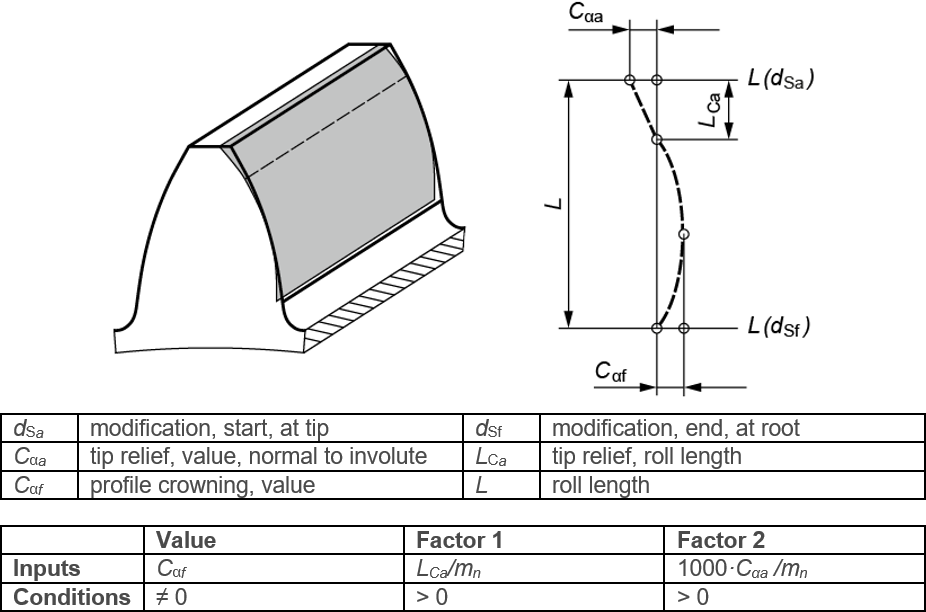

|
|
|


带齿廓鼓形修整的线性修缘
图（见图15.41）显示了如齿廓简图所定义的线性修缘与齿廓鼓形修整的组合。这是线性修缘与相连的齿廓鼓形修整的组合。「值」、「因子1」和「因子2」设置也在此图中显示。齿顶和齿根处的修形起始点可在「」选项卡中设置。

图15.41：带齿廓鼓形修整的线性修缘
此修改通常用于尝试将线性修缘与齿廓鼓形修整平滑衔接而不产生切向弯折。为此，「信息」字段中会输出 Factor2_opt=... 的值。如果将此值输入「因子2」字段，将精确实现这一效果。
Tip relief, linear with profile crowning
Figure (see Figure 15.41) shows the linear tip relief with profile crowning as defined in the profile diagram. This is a combination of a linear tip relief and a connected profile crowning. The Value, Factor 1 and Factor 2 settings are also shown in this figure. The start of modification at tip and at root can be set in the tab.
Figure 15.41: Linear tip relief with profile crowning
This modification is usually applied to attempt to merge the linear tip relief without bending tangentially into the profile crowning. A value for Factor2_opt=... is output in the Info field for this purpose. If you input this value in the Factor 2 field, you will achieve exactly this.